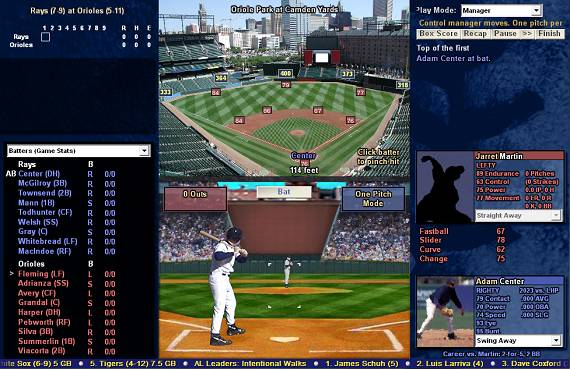
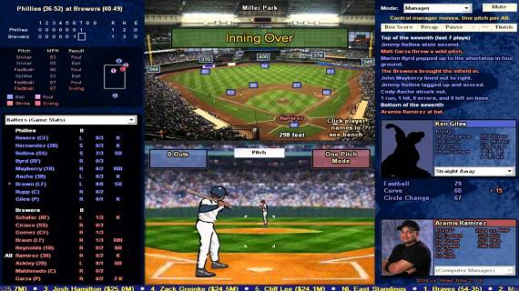

Baseball Mogul 系列
這是經營類棒球遊戲，所以沒有最新最炫聲光畫面，著重的是數據與模擬。
雖然 Out of the Park Baseball 系列更受好評，有更詳盡的數據項目，以及更嚴謹的模擬運算，甚至內建各國職業棒球的數據，包括中華職棒，不過資料處理速度慢，且沒能親自動手操控球員的功能，我還是比較喜歡 Baseball Mogul 系列，既可以模擬經營，又可以當棒球遊戲玩。
歷版差異
Baseball Mogul 2009 ~ Baseball Mogul 2013
我是從王建民發光發熱後的 Baseball Mogul 2009 開始接觸這遊戲，因為英特衛在台灣代理，且 490 元很便宜，買了不好玩也無所謂～
由於 Baseball Mogul 2014 開始，畫風變成美式動漫風格，原本真人投打畫面比較好看，因此我繼續停留在舊版。


Baseball Mogul 2014 ~ Baseball Mogul Diamond
Baseball Mogul 提供從 1901 年開始，到遊戲推出當年 MLB 賽季結束的資料。
Baseball Mogul 2014 資料更新到 2013 年，Baseball Mogul 2015 資料更新到 2014 年，隨後推出 Baseball Mogul Diamond 資料更新到 2015 年，照推算這應該相當於 Baseball Mogul 2016。
Baseball Mogul 2016 ~ Baseball Mogul 2017
但接著推出資料更新到 2016 年的，並不是 Baseball Mogul 2017，而是叫 Baseball Mogul 2016，從這開始，年度資料就與遊戲年份同步，再下來推出的 Baseball Mogul 2017 資料更新到 2017 年。
由於這遊戲基本上沒什麼變化，只是每代追加新一年度的資料，所以過去總覺得不需要為了每年最新資料再買過。但 Baseball Mogul 2016 模擬速度加快 70%，可以算是新的開始，值得再敗一次，所以這代開始資料與年份同步更讓我覺得不一樣。
球隊
由於遊戲囊括 1901 年到每年度最新的資料，所以另一個樂趣就是重溫不同年代的球隊陣容：
Boston Americans 1901: Cy Young.
Washington Senators 1913: Walter Johnson.
New York Yankees 1927: Babe Ruth.
Philadelphia Athletics 1929: Al Simmons, Lefty Grove.
St. Louis Cardinals 1934: Dizzy Dean.
Boston Red Sox 1941: Ted Williams.
New York Giants 1954: Willie Mays.
Brooklyn Dodgers 1955: Duke Snider, Roy Campanella, Jackie Robinson.
Milwaukee Braves 1957: Hank Aaron.
New York Yankees 1961: Roger Maris, Mickey Mantle.
Seattle Mariners 1993: Randy Johnson, Ken Griffey.
Los Angeles Dodgers 1996: 野茂英雄, Mike Piazza, Eric Karros, Raul Mondesi.
Florida Marlins 1997: Kevin Brown, Gary Sheffield, Moises Alou.
St. Louis Cardinals 1998: Mark McGwire.
Oakland Athletics 2003: Moneyball.
St. Louis Cardinals 2006: Albert Pujols.
New York Yankees 2007: 王建民.
這些年的球隊也想玩，但我玩的是 Baseball Mogul 2009，資料不夠新：
Washington Nationals 2011: 王建民, Mike Morse.
Washington Nationals 2015: Bryce Harper, Stephen Strasburg.
Chicago Cubs 2016: Kris Bryant, Jon Lester, Jake Arrieta, Kyle Hendricks.
感想
Out of the Park Baseball 19
Out of the Park Baseball 19 引進 3D 繪圖，可以看場上球員打球的動作了解戰況，有想跳槽過去。
以前 Out of the Park Baseball 都是盯著播報員的對話欄看訊息，來了解比賽情況怎樣，因為畫面顯示的球場，活像顯示球員成績用的圖表，無法用來觀看球賽打得怎樣。而 Baseball Mogul 至少有投打對決的畫面，不用看英文訊息也能感受到球員們打得怎樣。
用 3D 繪圖還有個好處，就是每位球員都有頭像，不像 Baseball Mogul 有些球員有相片有些沒有，一下彩色相片、一下剪影人物，看得很凌亂。
不過 Out of the Park Baseball 19 處理資料的速度又更慢了，這次不只數據，而是程式執行個動作也要等，受不了就不玩了。
R.B.I Baseball 15
我不喜歡操作複雜的棒球遊戲，但 21 世紀開始的棒球遊戲越做越複雜，想把球打擊出去或把球投進好球帶，都要集中精神準確控制，否則不是沒力道就是失誤。
所以我一直在玩的棒球，是 Super Famicom 的《スーパーファミスタ 5》。雖然好玩，但畢竟是日本野球遊戲，偶爾想玩大聯盟的遊戲時，只能把 MS-DOS 時代的 Hardball 5 搬出來玩 XDDD
R.B.I Baseball 15 的出現，讓我又開始享受大聯盟賽季了！系出同門，這遊戲跟《スーパーファミスタ 5》一樣，只靠方向鍵和一顆按鈕就能投球和揮棒，連選擇球種的操作都沒有。
雖然過度簡單和過度複雜一樣，都不是好事，會降低遊戲耐玩性，但比起過度複雜玩不下去，至少過度簡單還能快樂個幾天。